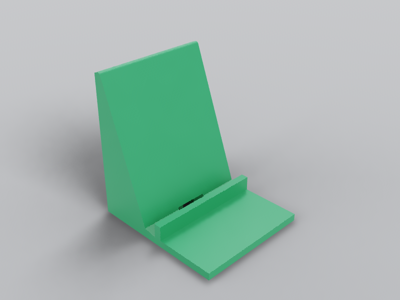

03-phone-stand
A phone stand: a side profile extruded to width. The phone leans back at `angle` degrees from vertical on a lipped ledge; a cable slot runs through the ledge and the back for a charger.

Source
Run it with cad run examples/dogfood/03-phone-stand.ts.
// A phone stand: a side profile extruded to width. The phone leans back at `angle` degrees from
// vertical on a lipped ledge; a cable slot runs through the ledge and the back for a charger.
import { Plane, box, model, param, polygon, slot } from "@cad/sdk";
export const stand = model("phone_stand", () => {
const angle = param("angle", 20, { min: 5, max: 40, step: 1, unit: "deg", description: "lean back from vertical" });
const width = param("width", 80, { min: 60, max: 120, unit: "mm" });
const t = 5, depth = 90, back = 100, ledge = 14, lip = 10;
const a = (angle * Math.PI) / 180;
// side profile in XZ (u = x forward, v = z up); the back leans toward -x
const bx = 30, by = t; // where the back meets the base
const top: [number, number] = [bx - back * Math.sin(a), by + back * Math.cos(a)];
const n: [number, number] = [Math.cos(a) * t, Math.sin(a) * t]; // the back's thickness, square to it
const profile = polygon([
[0, 0], [depth, 0], [depth, t], // base
[bx + ledge + t, t], [bx + ledge + t, t + lip], // lip
[bx + ledge, t + lip], [bx + ledge, t], // ledge
[bx + n[0], by + n[1]], // the back's front face up to the top
[top[0] + n[0], top[1] + n[1]], [top[0], top[1]], // the back's top
[Math.min(0, top[0]), 0], // a solid wedge down to the base's rear
], { plane: Plane.XZ });
// XZ extrudes toward -Y: centre it on y = 0
const body = profile.extrude(width, { midplane: true });
// the cable drops through the ledge's floor and leaves out the back of the wedge
const drop = slot(24, 10, { plane: Plane.XY.moveTo([bx + ledge / 2, 0, -1]) }).turn(90).extrude(t + 4); // clear of the exit channel's top (7): a cut ending inside another leaves a sliver
const exit = box(depth, 10, 8, { align: ["max", "center", "min"] }).translate(bx + ledge / 2 + 5, 0, -1);
const cable = drop.fuse(exit);
return body.cut(cable).fillet("|Y and >Z", 2).label("stand", { color: "#2f855a", material: "petg" });
});
if (import.meta.main) await stand();